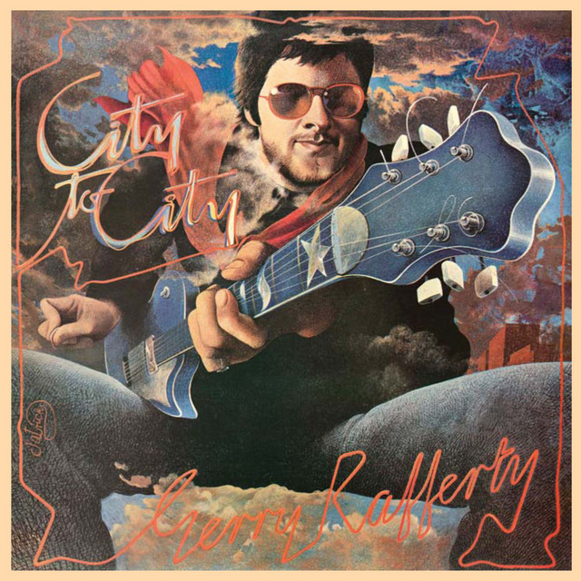

FRAGMENTED
interlude

right down the line
Gerry Rafferty
( TAP ANYWHERE TO CONTINUE )
right down the line
Gerry Rafferty
Fragmented Interlude explores the relationship between music and memory through a series of songs paired with distorted video imagery and lyric fragments. The visuals are sourced from personal videos but are intentionally obscured, allowing them to act as open-ended prompts that viewers can project their own memories onto.
The lyrics function as navigational links, guiding viewers between related songs through shared words or themes and forming a non-linear web of interconnected music and memory.
path taken